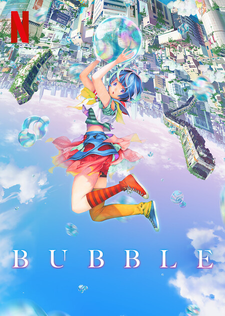

DARLING in the FRANXX
DARLING in the FRANXX
TV (24 eps)
Set in the distant future, the land is ruined and humanity establishes the mobile fort city Plantation. Pilots produced inside Plantation live in Mistilteinn, also know as the "birdcage." Children live there knowing nothing of the outside world or the freedom of the sky. Their lives consist of battling to carry out missions. Their enemies are mysterious giant lifeforms known as Kyouryuu, and the children pilot robots called Franxx to face off against them. For the children, riding the Franxx proves their existence. A boy named Hiro is called Code:016, and he was once known as a prodigy. However, he has fallen behind, and his existence seems unnecessary. Not piloting a Franxx is the same as ceasing to exist. One day, a mysterious girl known as "Zero Two" appears before him. Two horns grow out of her head.
Source: ANN
 Howl's Moving Castle
Howl's Moving Castle
Movie (1 ep x 118 min)
The responsible Sophie led a relatively normal life, safe within the walls of the hat shop in which she works; for outside, it is rumored, the evil wizard Howl roams the land in his mobile black castle. After a chance and mystical encounter, poor Sophie finds herself transformed by a witch's spell which makes her appear to be an old woman, and thus embarks on an adventure to find Howl’s castle and put an end to her curse. A mystical world of talking flames, sentient scarecrows, and magic aplenty awaits those who seek the legendary Howl...
An adaptation of Howl's Moving Castle by Diana Wynne Jones
 The Wind Rises
The Wind Rises
Movie (1 ep x 127 min)
Inspired by the aesthetics of design and the freedom of flying, Jiro Horikoshi pursues a life dedicated to the creation of a beautiful aircraft. He labors from his childhood, filled with dreams of engineering, to adulthood as he creates an elegant, flightworthy plane—the Mitsubishi A6M Zero—that eventually is used for something quite different than he expected: war.
Source: ANN

Bubble
Web (1 ep x 101 min)
The story is set in Tokyo, after bubbles that broke the laws of gravity rained down upon the world. Cut off from the outside world, Tokyo has become a playground for a group of young people who have lost their families, acting as a battlefield for parkour team battles as they leap from building to building. Hibiki, a young ace known for his dangerous play style, makes a reckless move one day and plummets into the gravity-bending sea. His life is saved by Uta, a girl with mysterious powers. The pair then hear a unique sound audible only to them. Why did Uta appear before Hibiki? Their encounter leads to a revelation that will change the world.
Source: Netflix
 From Up on Poppy Hill
From Up on Poppy Hill
Movie (1 ep x 91 min)
Yokohama, 1963. Japan is picking itself up from the devastation of World War II and preparing to host the Olympics. The mood is one of both optimism and conflict as the young generation struggles to throw off the shackles of a troubled past. Against this backdrop of hope and change, a friendship begins to blossom between high school students Umi and Shun – but a buried secret from their past emerges to cast a shadow on the future and pull them apart.
Source: Cinedigm